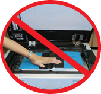

KIC BookEdge
No More Book Spine Damage!
Thick books with stiff spines and content that runs deep into the bookfold are often damaged when copied. KIC BookEdge easily captures content well into the bookfold without damaging the spine.
Black edges are automatically removed and the content is straightened, producing clean,
professional looking images - important for electronic reserves, course curriculum materials and
research reports. These automatic important treatment functios also save a lot of faculty,
administrator, and student
time.

The scan to the edge feature avoids damage to book bindings
Compatible with Copy Card & Cash System
All KIC systems are compatible with all standard
copy card and coin-op devices. Since KIC transfers
images to users computers electronically, costly expendables
are avoided even for color!
The library can opt to keep all revenue in collects.